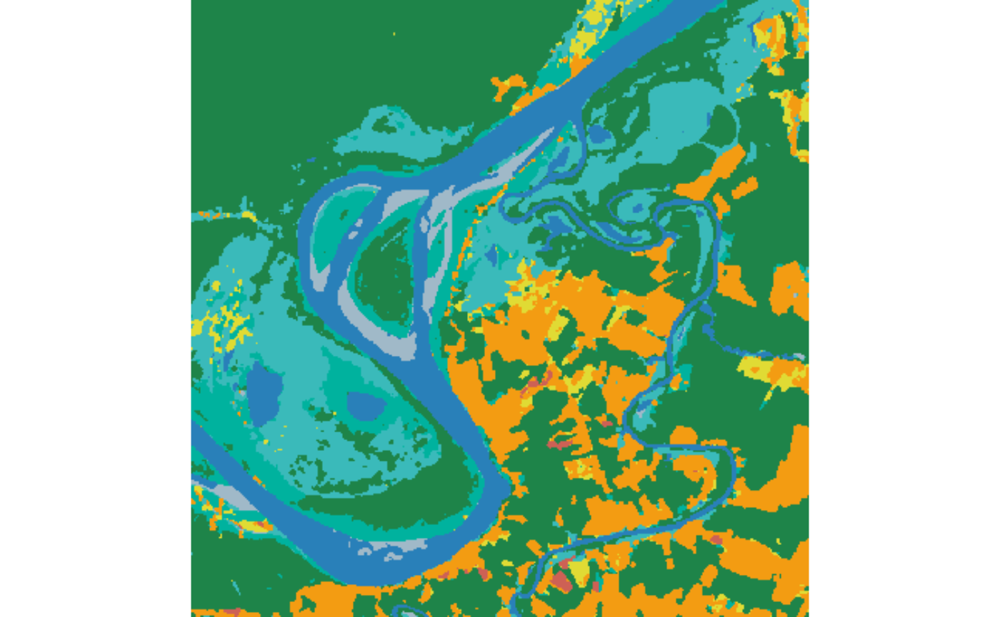
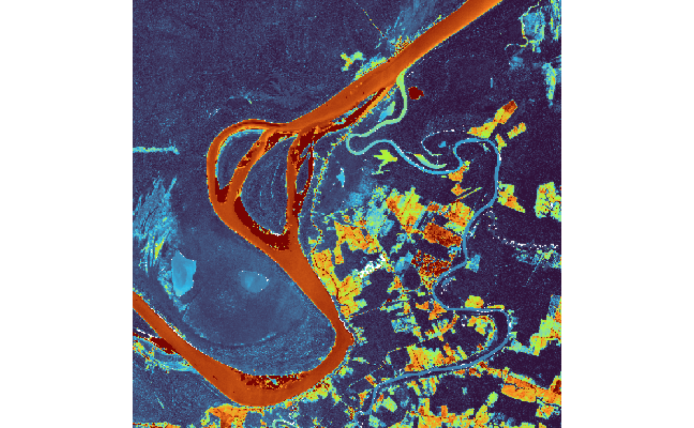

Overview
rstatic provides composable primitives to build and
serialize static SpatioTemporal Asset Catalog (STAC)
documents. A static catalog is a tree of plain JSON files linked to one
another, following the STAC specification
version 1.0.0:
stac/
catalog.json
collections/
{collection}/
collection.json
items/
{item}/
item.jsonThis vignette shows how to build such a tree from scratch. The design
separates a pure core that builds documents in memory
from a thin I/O shell: [stac_save()] is the writer and
[stac_read()] the reader. Nothing is written until you call
stac_save() at the end.
To be fully self-contained in this vignette, all output is written under a temporary directory:
root <- tempfile("stac-")1. Build the root catalog
new_catalog() builds the root catalog document.
catalog <- new_catalog(
id = "rstatic-catalog",
title = "rstatic package catalog",
description = "An example static STAC catalog built with rstatic"
)
catalog
#> <STAC Catalog: rstatic-catalog>
#> title: rstatic package catalog
#> description: An example static STAC catalog built with rstatic
#> links: 22. Create and attach a collection
In STAC, collections group related items.
new_collection() builds the document and
add_collection() registers it as a child of
the catalog, returning the updated catalog. No files are written. Any
extra named arguments (e.g. citation, doi) are
stored as additional collection fields.
collection <- new_collection(
id = "land-cover",
title = "Example Land Cover",
description = "Annual land cover map (example data)",
license = "CC-BY-4.0"
)
catalog <- add_collection(catalog, collection)
collection
#> <STAC Collection: land-cover>
#> title: Example Land Cover
#> description: Annual land cover map (example data)
#> license: CC-BY-4.0
#> links: 3
#> fields: description, extent, id, license, links, stac_version, title, type3. Spatial metadata
If terra is
installed, extract_bbox() reads a raster and returns its
bounding box in WGS84. When terra is not available, you can
pass a bounding box directly.
A small Sentinel-2 subset ships with the package for demonstration.
tif_path <- system.file(
"extdata/lulc/S2_MSI_20LMR_2022-01-05_2022-12-23_class_v1.tif",
package = "rstatic"
)
bbox <- extract_bbox(tif_path)
bbox
#> xmin ymin xmax ymax
#> -63.636579 -8.630257 -63.418217 -8.412882The as_geometry() helper turns a bounding box into a
GeoJSON polygon and has no external dependencies:
bbox <- c(-63.63658, -8.630256, -63.41822, -8.412882)
geometry <- as_geometry(bbox)
geometry
#> <GeoJSON Geometry: Polygon>
#> bbox: -63.636580, -8.630256, -63.418220, -8.4128824. Build items
Items are GeoJSON Features. Build their
properties with new_properties() and
assets with new_asset(); the asset media type
is deduced from the file extension.
STAC requires every item to carry a datetime. This map
is an annual classification covering the whole of 2022, so it is better
described by a range: pass start_datetime and
end_datetime and leave datetime out.
new_properties() then records datetime as
null, exactly as the specification mandates for ranged
items.
Passing collection records the owning collection’s id on
the item, as STAC requires whenever an item links to a collection. It
also lets later steps locate the item on disk without repeating the
collection.
item <- new_item(
id = "land-cover-2022",
bbox = bbox,
geometry = geometry,
collection = collection,
properties = new_properties(
start_datetime = "2022-01-05T00:00:00Z",
end_datetime = "2022-12-23T00:00:00Z",
description = "Example land cover map for 2022"
),
assets = list(
data = new_asset(tif_path, title = "Land Cover 2022")
)
)
item
#> <STAC Item: land-cover-2022>
#> collection: land-cover
#> bbox: -63.636580, -8.630256, -63.418220, -8.412882
#> datetime: 2022-01-05T00:00:00Z / 2022-12-23T00:00:00Z
#> assets: data
#> links: 4
#> fields: assets, bbox, collection, geometry, id, links, properties, stac_version, type5. Add items to the collection
add_items() links each item from the collection and
updates the collection’s spatial and temporal extent automatically. It
returns the updated collection without writing anything on disk. The
temporal extent picks up the item’s
start_datetime/end_datetime range, so the
interval spans the full year:
collection <- add_items(collection, item)
collection
#> <STAC Collection: land-cover>
#> title: Example Land Cover
#> description: Annual land cover map (example data)
#> license: CC-BY-4.0
#> bbox: -63.636580, -8.630256, -63.418220, -8.412882
#> interval: 2022-01-05T00:00:00Z / 2022-12-23T00:00:00Z
#> links: 4
#> fields: description, extent, id, license, links, stac_version, title, type6. Thumbnails and styles (optional)
new_thumbnail() describes a PNG preview to
render from a raster. It is a pure builder: it reads no raster and
writes no file. It returns a STAC asset (like new_asset())
carrying the render intent (the source raster, width, and
style), which stac_save() materializes later, when the
owning item is written. A stac_style() object describes how
raster values map to thumbnail pixels; it only validates and normalizes
the rendering intent.
The LULC raster shipped with the package
(S2_MSI_20LMR_2022-01-05_2022-12-23_class_v1.tif) is a
single-band GeoTIFF classification map for 2022, derived
from a Sentinel-2 L2A data cube over tile 20LMR in Rondônia
state, Brazil. Each pixel holds an integer class from 1 to 9, with 0
marking nodata. The data cube and training points are available in the
sitsdata
repository.
The style type is inferred from the parameters rather than chosen
explicitly. Supplying values and colors
produces a categorical style, suitable for a land-cover map where each
integer class has its own color:
land_cover_style <- stac_style(
values = c(1, 2, 3, 4, 5, 6, 7, 8, 9),
colors = c("#F39C12", "#CD6155", "#E0DB34", "#1E8449", "#229C59",
"#00B29E", "#3ABABA", "#2980B9", "#A0B9C8"),
labels = c("Clear_Cut_Bare_Soil", "Clear_Cut_Burned_Area",
"Clear_Cut_Vegetation", "Forest", "Mountainside_Forest",
"Riparian_Forest", "Seasonally_Flooded", "Water", "Wetland"),
nodata = 0
)
land_cover_style
#> <Style: categorical>
#> labels: Clear_Cut_Bare_Soil, Clear_Cut_Burned_Area, Clear_Cut_Vegetation, Fore... (9)
#> nodata: 0qml_to_style() reads a supported QGIS .qml
raster style and returns the same kind of object as
stac_style() (it requires xml2). The QML
shipped alongside the LULC raster is a paletted style, so it
converts to an equivalent categorical style:
qml_style <- qml_to_style(
system.file("extdata/lulc/S2_MSI_20LMR_2022-01-05_2022-12-23_class_v1.qml",
package = "rstatic")
)
qml_style
#> <Style: categorical>
#> labels: Clear_Cut_Bare_Soil, Clear_Cut_Burned_Area, Clear_Cut_Vegetation, Fore... (9)new_thumbnail() accepts either a raster path or a
doc_asset, so we derive the thumbnail straight from the
item’s data asset. Attach the intent under the
"thumbnail" key, then add the updated item to the
collection. No raster is touched yet. The PNG is rendered
at save time, which requires terra, so we only attach it
when terra is available:
thumb <- new_thumbnail(
item$assets$data,
width = 400,
style = land_cover_style
)
item <- add_asset(item, "thumbnail", thumb)
collection <- add_items(collection, item)7. Save the catalog
So far nothing has been written. stac_save() is the only
writer: it persists exactly the documents you hand it. It is a pure
overwrite, with no implicit reads or merges, and renders any thumbnail
intent into the item’s directory. Documents are written children-first
(items, then collection, then catalog).
stac_save(catalog = catalog, collection = collection, items = item,
root_dir = root)When a thumbnail was attached, its PNG now exists under the item
directory. The in-memory asset still carries only the relative
href "thumbnail.png", so
update_root() re-points it at the rendered file under
root before plotting:
item <- update_root(item, root)
plot(item$assets$thumbnail)
Categorical land-cover thumbnail rendered at save time.
8. Visualizing a continuous band
The same machinery renders continuous rasters. The package also ships
a single Sentinel-2 L2A band
(S2_MSI_20LMR_B04_2022-07-16.tif): the red band (B04) of
tile 20LMR, acquired on 16 July 2022. Its pixels are
surface-reflectance values scaled to integers (x1000, roughly 190-1400
over this scene).
With neither values/colors nor three
bands, stac_style() infers a
continuous style. A grayscale ramp stretches the
reflectance range between black and white:
b04_path <- system.file(
"extdata/s2/S2_MSI_20LMR_B04_2022-07-16.tif",
package = "rstatic"
)
stac_style(min = 192, max = 1371, palette = c("black", "white"))
#> <Style: continuous>
#> stretch: min=192, max=1371
#> palette: black, whiteThe matching QML is a single-band pseudocolor style, which
qml_to_style() converts to a continuous color ramp:
b04_style <- qml_to_style(
system.file("extdata/s2/S2_MSI_20LMR_B04_2022-07-16.qml", package = "rstatic")
)
b04_style
#> <Style: continuous>
#> stretch: min=192, max=1371
#> palette: #30123b, #28bceb, #a4fc3c, #fb7e21, #7a0403To preview the band as part of the same catalog, give it its own
collection, add the item, and link the collection into the catalog.
Everything is saved under the shared root, alongside the
land-cover collection. We build the item around a data
asset, so the same asset feeds both extract_bbox() and
new_thumbnail(). Then resolve the rendered PNG with
update_root() and plot it:
s2_collection <- new_collection(
"sentinel-2-l2a", "Sentinel-2 L2A", "Single-band reflectance preview"
)
b04_asset <- new_asset(b04_path, title = "B04 (red)")
b04_item <- new_item(
"b04-2022-07-16",
bbox = extract_bbox(b04_asset),
collection = s2_collection,
properties = new_properties(datetime = "2022-07-16T00:00:00Z"),
assets = list(data = b04_asset)
)
b04_item <- add_asset(
b04_item, "thumbnail",
new_thumbnail(b04_item$assets$data, width = 400, style = b04_style)
)
s2_collection <- add_items(s2_collection, b04_item)
catalog <- add_collection(catalog, s2_collection)
stac_save(catalog = catalog, collection = s2_collection, items = b04_item,
root_dir = root)
b04_item <- update_root(b04_item, root)
plot(b04_item$assets$thumbnail)
Pseudocolor stretch of the Sentinel-2 B04 (red) band.
9. Update a catalog already on disk
To add to a catalog that is already persisted (typically from a
separate script populating the same catalog over time) read it
back, build in memory, and save again. Because stac_save()
never merges implicitly, reading first is what preserves the children
already registered on disk:
catalog <- stac_read(
file.path(root, "stac", "catalog.json"),
default = new_catalog("restore-plus", "Restore+ Catalog", "...")
)
deforestation <- new_collection(
id = "deforestation",
title = "Example Deforestation",
description = "A second collection added in a later run"
)
catalog <- add_collection(catalog, deforestation)
stac_save(catalog = catalog, collection = deforestation, root_dir = root)
# The catalog now links every collection (land-cover, sentinel-2-l2a,
# and deforestation). `list_links()` filters by any link field.
list_links(catalog, rel == "child")
#> [[1]]
#> <STAC Link: child>
#> href: collections/land-cover/collection.json
#> type: application/json
#> title: Example Land Cover
#>
#> [[2]]
#> <STAC Link: child>
#> href: collections/sentinel-2-l2a/collection.json
#> type: application/json
#> title: Sentinel-2 L2A
#>
#> [[3]]
#> <STAC Link: child>
#> href: collections/deforestation/collection.json
#> type: application/json
#> title: Example DeforestationResulting catalog
The final directory tree contains the linked JSON documents:
list.files(file.path(root, "stac"), recursive = TRUE)
#> [1] "catalog.json"
#> [2] "collections/deforestation/collection.json"
#> [3] "collections/land-cover/collection.json"
#> [4] "collections/land-cover/items/land-cover-2022/item.json"
#> [5] "collections/land-cover/items/land-cover-2022/thumbnail.png"
#> [6] "collections/sentinel-2-l2a/collection.json"
#> [7] "collections/sentinel-2-l2a/items/b04-2022-07-16/item.json"
#> [8] "collections/sentinel-2-l2a/items/b04-2022-07-16/thumbnail.png"Each file is a self-contained STAC document. For example, the item:
cat(readLines(
file.path(root, "stac", "collections", "land-cover",
"items", "land-cover-2022", "item.json")
), sep = "\n")
#> {
#> "stac_version": "1.0.0",
#> "type": "Feature",
#> "id": "land-cover-2022",
#> "collection": "land-cover",
#> "bbox": [-63.6366, -8.6303, -63.4182, -8.4129],
#> "geometry": {
#> "type": "Polygon",
#> "coordinates": [
#> [
#> [-63.6366, -8.6303],
#> [-63.4182, -8.6303],
#> [-63.4182, -8.4129],
#> [-63.6366, -8.4129],
#> [-63.6366, -8.6303]
#> ]
#> ]
#> },
#> "properties": {
#> "description": "Example land cover map for 2022",
#> "datetime": null,
#> "start_datetime": "2022-01-05T00:00:00Z",
#> "end_datetime": "2022-12-23T00:00:00Z"
#> },
#> "assets": {
#> "data": {
#> "href": "/home/runner/work/_temp/Library/rstatic/extdata/lulc/S2_MSI_20LMR_2022-01-05_2022-12-23_class_v1.tif",
#> "type": "image/tiff; application=geotiff",
#> "roles": [
#> "data"
#> ],
#> "title": "Land Cover 2022"
#> },
#> "thumbnail": {
#> "href": "thumbnail.png",
#> "type": "image/png",
#> "roles": [
#> "thumbnail"
#> ],
#> "title": "Thumbnail"
#> }
#> },
#> "links": [
#> {
#> "rel": "self",
#> "href": "item.json",
#> "type": "application/json"
#> },
#> {
#> "rel": "root",
#> "href": "../../../../catalog.json",
#> "type": "application/json"
#> },
#> {
#> "rel": "parent",
#> "href": "../../collection.json",
#> "type": "application/json"
#> },
#> {
#> "rel": "collection",
#> "href": "../../collection.json",
#> "type": "application/json"
#> }
#> ]
#> }